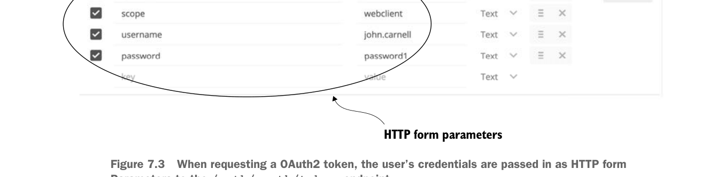
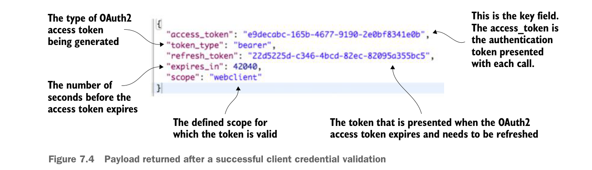

Tham số form HTTP

Khi yêu cầu token OAuth2, thông tin đăng nhập của người dùng được truyền vào dưới dạng tham số form HTTP tới endpoint /auth/oauth/token.
Khác với các lời gọi REST khác trong sách này, các tham số trong danh sách này sẽ không được truyền vào dưới dạng body JavaScript. Chuẩn OAuth2 yêu cầu mọi tham số truyền tới endpoint tạo token phải là tham số form HTTP. Hình 7.3 cho thấy cách cấu hình tham số form HTTP cho lời gọi OAuth2 của bạn.
Hình 7.4 cho thấy payload JavaScript được trả về từ lời gọi /auth/oauth/token.
Payload trả về chứa năm thuộc tính:
- access_token—Token OAuth2 sẽ được trình kèm theo mỗi lời gọi dịch vụ mà người dùng thực hiện tới tài nguyên được bảo vệ.
- token_type—Loại token. Đặc tả OAuth2 cho phép bạn định nghĩa nhiều loại token. Loại token phổ biến nhất được dùng là bearer token. Chúng ta sẽ không đề cập các loại token khác trong chương này.
